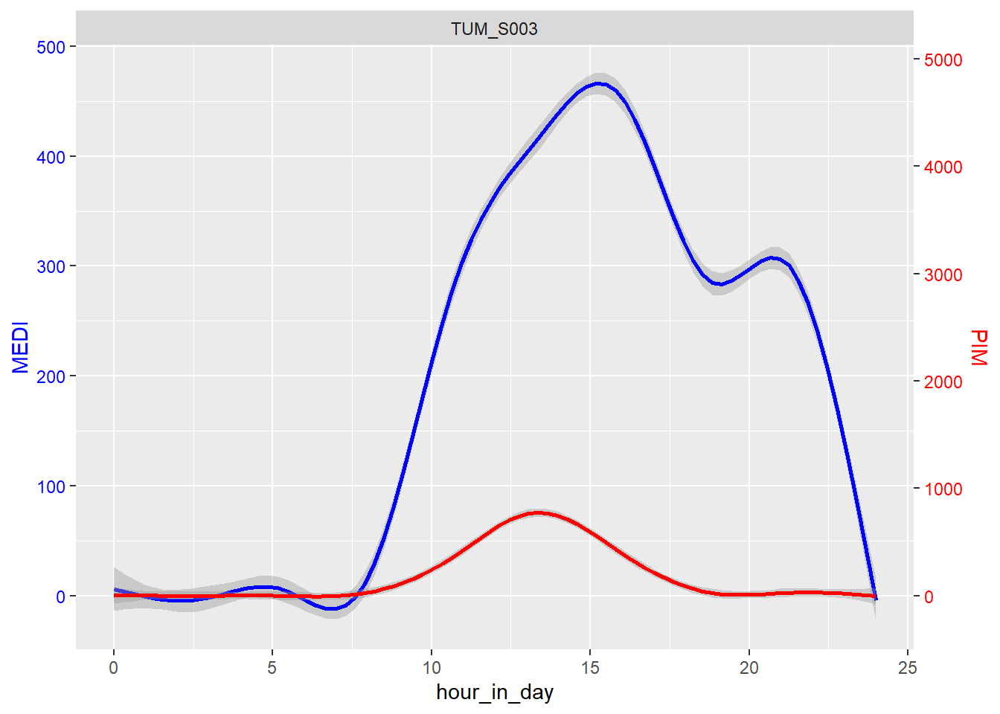
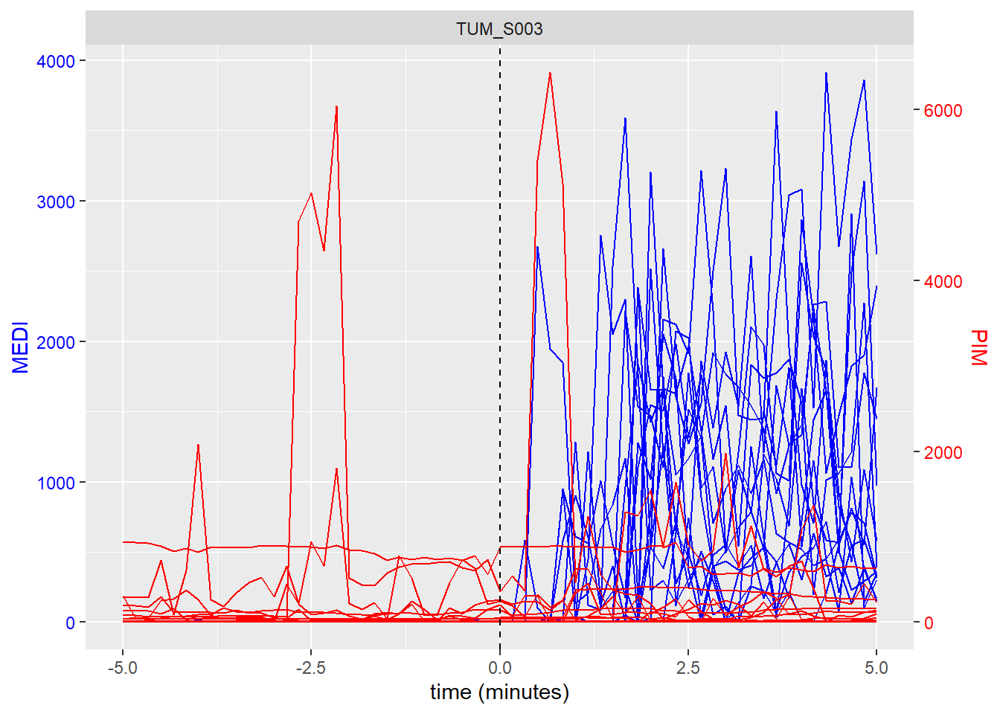
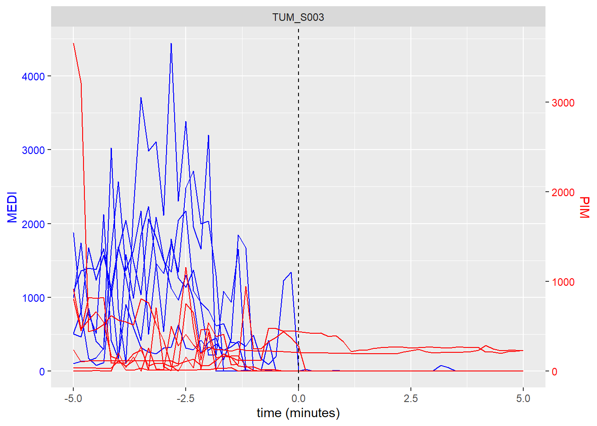
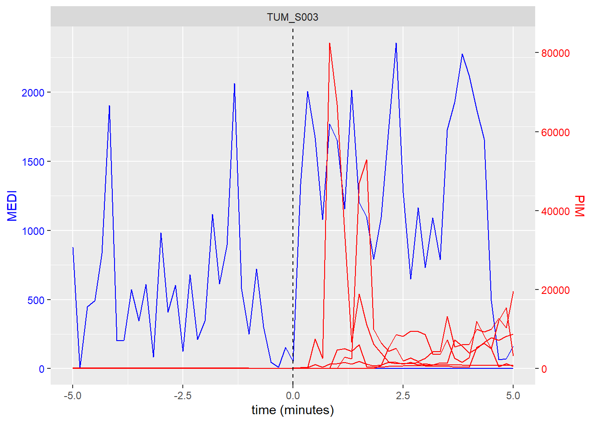
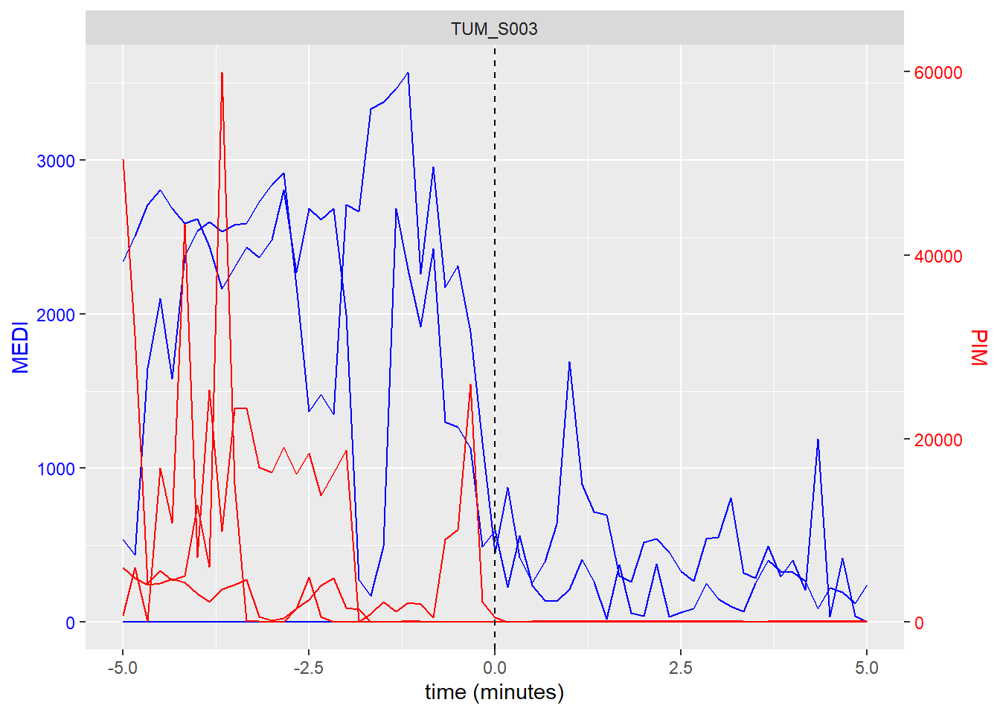

Same as exploration 2 but now with MEDI from eyel-level and PIM from wrist
Prepare data
Load dependencies
library(tidyverse)
── Attaching core tidyverse packages ──────────────────────── tidyverse 2.0.0 ──
✔ dplyr 1.2.1 ✔ readr 2.2.0
✔ forcats 1.0.1 ✔ stringr 1.6.0
✔ ggplot2 4.0.3 ✔ tibble 3.3.1
✔ lubridate 1.9.5 ✔ tidyr 1.3.2
✔ purrr 1.2.2
── Conflicts ────────────────────────────────────────── tidyverse_conflicts() ──
✖ dplyr::filter() masks stats::filter()
✖ dplyr::lag() masks stats::lag()
ℹ Use the conflicted package (<http://conflicted.r-lib.org/>) to force all conflicts to become errors
library(melidosData)library(gridExtra)
Attaching package: 'gridExtra'
The following object is masked from 'package:dplyr':
combine
library(lubridate)
(Down)load data
Load Melidos Data from all sites and store locally.
for (modality inc("light_wrist", "light_glasses")) { site ="TUM" outputfile =paste0(modality, "_", site, ".RData")if (!file.exists(outputfile)) {# Only download data when not downloaded before data <- melidosData::load_data(modality = modality, site = site)save(data, file = outputfile) } else {load(file = outputfile) }if (modality =="light_wrist") { data_light_wrist = data } else { data_light_glasses = data }}# combine into one data object with MEDI from glasses and PIM from wrist sites_to_remove =NULLdata_light_glasses =merge(data_light_glasses, data_light_wrist,by =c("Datetime", "Id"),suffixes =c(".glass", ".wrist"))data_light_glasses <- data_light_glasses |> dplyr::select(Id, Datetime, MEDI.glass, PIM.wrist) |>rename(MEDI = MEDI.glass, PIM = PIM.wrist)data = data_light_glassesrm(data_light_glasses, data_light_wrist)
Inspect sample sizes
Nall =0N =length(unique(data$Id))cat(paste0("N ", site, ": ", N, "\n"))
N TUM: 1
Select only relevant columns
D = data |> dplyr::select(Id, Datetime, MEDI, PIM)dplyr::glimpse(D)
`geom_smooth()` using formula = 'y ~ s(x, bs = "cs")'
`geom_smooth()` using formula = 'y ~ s(x, bs = "cs")'

Explore change points - low PIM => high PIM
In this section I am putting most code in functions to ease repeating the same analysis for high PIM => low PIM, low MEDI => high MEDI, high MEDI => low MEDI.
Go back to original data object
rm(D)D = data |> dplyr::select(Id, Datetime, MEDI, PIM) |>ungroup() |> dplyr::filter(if_all(c(Datetime, MEDI, PIM), ~!is.na(.x))) |>arrange(Id, Datetime)D_backup = D # Keep backup for next section
Find time points where value transitions
I am using an improvised change point detection algorithm.
PIM_change_detection =function(x){# x = sequence change =FALSE N =length(x)# ignore incomplete time series at start and endif (N <60) return(change) midpoint =ceiling(N/2) mn_before =mean(x[1:midpoint]) sd_before =sd(x[1:midpoint]) max_before =max(x[1:midpoint]) mn_after =mean(x[(midpoint +1):N])# heuristic logic to identify changes from inactive to activeif (mn_after > mn_before *10&& mn_before <200&& sd_before <100&& max_before <100&& mn_after >500) { # use t-test to test for actual difference (note: maybe redundant) tt =t.test(x[1:midpoint], x[(midpoint +1):N])if (tt$p.value <0.01) { # t-test significant change =TRUE } }return(change) # boolean: true = change, false = no change}epoch_size =10half_window_size = (60/ epoch_size) *5# 5 minutesD$change_points =0for (id inunique(D$Id)) { id_segment =which(D$Id == id) D$change_points[id_segment] = slider::slide_dbl(.x = D$PIM[id_segment],.f =~PIM_change_detection(.x),.before = half_window_size,.after = half_window_size,.complete =FALSE)}
Find middle of each sequence labelled as changepoint
The above results in sequences of change points, for convenience select middle point of such sequence only.
Create tibble with all time series centered around the change points
To be able to plot the data we need a long format object with all time series before and after the change points.
create_tibble =function(D, half_window_size, epochsize) { output =c()for (id inunique(D$Id)) { S = D[which(D$Id == id),] N =nrow(S) change_points =which(S$change_points_final ==1)# initialise tibble to store all the sequences Nc =length(change_points) * ((half_window_size *2) +1) ts =tibble(changepoint =numeric(Nc),MEDI =numeric(Nc),PIM =numeric(Nc),time =numeric(Nc),Id =character(Nc)) ts$Id = id i =1if (length(change_points) >0) {for (j in change_points) {if (j > half_window_size +1&& (j + half_window_size) <= N) { segment = i:(i + (half_window_size *2)) ts$PIM[segment] = S$PIM[(j - half_window_size):(j + half_window_size)] ts$MEDI[segment] = S$MEDI[(j - half_window_size):(j + half_window_size)] ts$time[segment] =-half_window_size:half_window_size / (60/epoch_size) ts$changepoint[segment] = j i = i +1+ (half_window_size *2) } } output =rbind(output, ts) } } output <- output |>group_by(changepoint)return(output)}output =create_tibble(D, half_window_size, epochsize)
Plot
plot_changepoint_ts =function(output) { scaleFactor <-max(output$PIM) /max(output$MEDI)ggplot(output, aes(x = time, group = changepoint)) +geom_line(aes(y = PIM), col ="blue") +geom_line(aes(y = MEDI * scaleFactor), col ="red") +scale_y_continuous(name ="MEDI", sec.axis =sec_axis(~./scaleFactor, name ="PIM")) +theme(axis.title.y.left =element_text(color ="blue"),axis.text.y.left =element_text(color ="blue"),axis.title.y.right =element_text(color ="red"),axis.text.y.right =element_text(color ="red") ) +geom_vline(xintercept =0, linetype ="dashed") +labs(x ="time (minutes)") +facet_wrap(~Id)}plot_changepoint_ts(output)

Explore change points - high PIM => low PIM
Now to the same as above, but from a MEDI perspective
Go back to original data object
D = D_backup
Find time points where value transitions
I am using an improvised change point detection algorithm.
PIM_change_detection =function(x){# x = sequence change =FALSE N =length(x)# ignore incomplete time series at start and endif (N <60) return(change) midpoint =ceiling(N/2) mn_before =mean(x[1:midpoint]) sd_after =sd(x[(midpoint +1):N]) max_after =max(x[(midpoint +1):N]) mn_after =mean(x[(midpoint +1):N])# heuristic logic to identify changes from inactive to activeif (mn_before > mn_after *10&& mn_after <2000&& sd_after <100&& max_after <100&& mn_before >500) { # use t-test to test for actual difference (note: maybe redundant) tt =t.test(x[1:midpoint], x[(midpoint +1):N])if (tt$p.value <0.01) { # t-test significant change =TRUE } }return(change) # boolean: true = change, false = no change}epoch_size =10half_window_size = (60/ epoch_size) *5# 5 minutesD$change_points =0for (id inunique(D$Id)) { id_segment =which(D$Id == id) D$change_points[id_segment] = slider::slide_dbl(.x = D$PIM[id_segment],.f =~PIM_change_detection(.x),.before = half_window_size,.after = half_window_size,.complete =FALSE)}
However, this results in sequences of change points as multiple time points may meet the change point criteria. For convenience select middle point of such sequence.
Repeat same processing steps as before
D =find_middle(D)output =create_tibble(D, half_window_size, epochsize)
Plot
plot_changepoint_ts(output)

Explore change points - low MEDI => high MEDI
Now to the same as above, but from a MEDI perspective
Go back to original data object
D = D_backup
Find time points where value transitions
I am using an improvised change point detection algorithm.
MEDI_change_detection =function(x){# x = sequence change =FALSE N =length(x)# ignore incomplete time series at start and endif (N <60) return(change) midpoint =ceiling(N/2) mn_before =mean(x[1:midpoint]) sd_before =sd(x[1:midpoint]) max_before =max(x[1:midpoint]) mn_after =mean(x[(midpoint +1):N])# heuristic logic to identify changes from inactive to activeif (mn_after > mn_before *10&& mn_before <1000&& sd_before <200&& max_before <200&& mn_after >1000) { # use t-test to test for actual difference (note: maybe redundant) tt =t.test(x[1:midpoint], x[(midpoint +1):N])if (tt$p.value <0.01) { # t-test significant change =TRUE } }return(change) # boolean: true = change, false = no change}epoch_size =10half_window_size = (60/ epoch_size) *5# 5 minutesD$change_points =0for (id inunique(D$Id)) { id_segment =which(D$Id == id) D$change_points[id_segment] = slider::slide_dbl(.x = D$MEDI[id_segment],.f =~MEDI_change_detection(.x),.before = half_window_size,.after = half_window_size,.complete =FALSE)}
However, this results in sequences of change points as multiple time points may meet the change point criteria. For convenience select middle point of such sequence.
Repeat same processing steps as before
D =find_middle(D)output =create_tibble(D, half_window_size, epochsize)
Plot
plot_changepoint_ts(output)

Explore change points - high MEDI => low MEDI
Now to the same as above, but from a MEDI perspective
Go back to original data object
D = D_backup
Find time points where value transitions
I am using an improvised change point detection algorithm.
MEDI_change_detection =function(x){# x = sequence change =FALSE N =length(x)# ignore incomplete time series at start and endif (N <60) return(change) midpoint =ceiling(N/2) mn_before =mean(x[1:midpoint]) sd_after =sd(x[(midpoint +1):N]) max_after =max(x[(midpoint +1):N]) mn_after =mean(x[(midpoint +1):N])# heuristic logic to identify changes from inactive to activeif (mn_before > mn_after *10&& mn_after <1000&& sd_after <200&& max_after <200&& mn_before >1000) { # use t-test to test for actual difference (note: maybe redundant) tt =t.test(x[1:midpoint], x[(midpoint +1):N])if (tt$p.value <0.01) { # t-test significant change =TRUE } }return(change) # boolean: true = change, false = no change}epoch_size =10half_window_size = (60/ epoch_size) *5# 5 minutesD$change_points =0for (id inunique(D$Id)) { id_segment =which(D$Id == id) D$change_points[id_segment] = slider::slide_dbl(.x = D$MEDI[id_segment],.f =~MEDI_change_detection(.x),.before = half_window_size,.after = half_window_size,.complete =FALSE)}
Repeat same processing steps as before
D =find_middle(D)output =create_tibble(D, half_window_size, epochsize)
Plot
plot_changepoint_ts(output)

Reflections
24 hour averaged data
Non-smoothed 24 hour averaged MEDI and PIM shows that light exposure and activity tend to happen during the same hours of the day, but do not reveal clear general patterns.
Smoothed 24 hour averaged MEDI and PIM shows that they sometimes be correlated and sometimes not, with large variation between individuals.
Change points
My subjective interpretation is that change in MEDI coincides with change in PIM, but change in PIM does not coincide in change in MEDI. It is tempting to then conclude that light exposure change causes the change in activity, while change in activity does not cause change in light exposure. However, to me it seems that often activity already starts to change before the light starts to change. Therefore, the cause of changes may (also) be external.
Correction: This should be the other way around, as I misread the colours. Either way, I think there are subtle hints in the data at one directional assocations… maybe causality is too strong word.